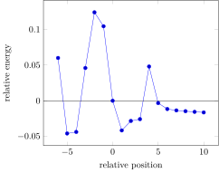

ANN: DynamicHMC 2.0
2019/09/03I am very pleased to announce version 2.0 of DynamicHMC.jl. I briefly summarize the new the developments in this blog post.
Code used in this post was written for Julia v1.* and, when applicable, reflects the state of packages used on 2019-09-03. You may need to modify it for different versions.
Note: my blog no longer has a comment section. Feel free to ask questions about this post on the Julia Discourse forum.
Some context
DynamicHMC.jl is part of a collection of packages for implementing Bayesian inference using a modular approach:
TransformVariables.jl just maps \(\mathbb{R}^n\) vectors into collections of constrained parameters, like positive real numbers or valid correlation matrices,
LogDensityProblems.jl provides an interface for log density functions \(\mathbb{R}^n \to \mathbb{R}\) and their derivative, also calculating the latter using automatic differentiation via one of the supported native Julia AD frameworks (see below),
DynamicHMC.jl, which just takes a log density and its gradient on \(\mathbb{R}^n\), and performs MCMC using NUTS,
MCMCDiagnostics.jl for generic convergence diagnostics (ie not specific to a particular MCMC method).
In contrast to a single interface and a DSL for describing models, these packages provide a suite of tools for modern MCMC, with easily interchangable and modular building blocks. For example, the gradients of a log density can be obtained with
- ForwardDiff.jl, which is very robust,
- ReverseDiff.jl, which works better for medium-sized problems using a classic taped approach,
- Flux.jl which is more modern and can be faster on larger problems, and of course
- Zygote.jl which is very promising, but work in progress;
and switching between these usually just requires changing a single line. I find this especially important since as Zygote keeps maturing, it will play a more and more important role for fast AD. Moreover, the user is free to code all gradients manually, or just parts of them to help out AD, for example with the adjoint method.
In addition to this, some packages use DynamicHMC.jl as a backend. This is encouraged and remains to be supported. Finally, the third common use case for this package is as a research platform for experimenting with modern HMC algorithms: this is supported by a detailed documentation of internals.
Why a new API was needed
As bug reports and test cases kept accumulating, it was very clear that better adaptation heuristics, and a more sophisticated diagnosic and warmup interface was needed. When NUTS/HMC goes wrong with models it should be able to handle otherwise, the problem is usually with adaptation. The user should be able to learn what went wrong, and either manually tune stepsize and the kinetic energy metric, or choose an adaptation better suited to the model.
The old API of DynamicHMC was lacking in several ways. The main entry point was something like
chain, tuning = NUTS_init_tune_mcmc(∇P, 1000)with tuning containing the adapted stepsize and kinetic energy metric.
In practice, it turns out that
- either the model works fine, and then the user cares little about warmup,
- or it doesn't, then information about the warmup would be necessary to debug the model.
Fine-tuning the adaptation sequence was possible, but rather unintuitive in the old API. I doubt that many people used this feature, or were even aware that it was available. Statistics on why adaptation failed or sampling didn't mix were also difficult to obtain.
After collecting the various problems, I spent some time on redesigning the internals, then the API to address all major issues.
Here I would like to thank all users of this library who provided a lot of valuable feedback, especially in the form of bug reports which I could study and use to tweak the sampler. Robert J Goedman coded all the models of the excellent “Statistical Rethinking” book in DynamicHMCModels.jl, which is the most comprehensive collection of examples for this package, and also provides and extremely useful test suite for it. DiffEqBayes.jl included DynamicHMC as a backend, while Soss.jl provides a higher-level DSL for building models. Users (who are, mostly, also the authors) of these packages provided a lot of example models and test cases.
Changes in 2.0
Documentation
The documentation was rewritten from scratch, now including a worked example. All functions of the API have extensive docstrings, usually with examples where relevant. This documentation should be the starting point for using this package.
Of course, if you have questions, feature requests, or bug reports, don't hesitate to open an issue; I would like to emphasize that it is still perfectly fine to open issues just to ask questions. You can also address questions to @Tamas_Papp on the Julia discourse forum.
Main interface
Most people would now call the sampler with
results = mcmc_with_warmup(Random.GLOBAL_RNG, ∇P, 1000)where ∇P is an object that supports the LogDensityProblems.jl API (basically “give me a log density and its gradient at this position”, withs some bells and whistles). results is a NamedTuple with fields like chain (a vector of positions in \(\mathbb{R}^n\), which most users probably need to transform into a collection of constrained parameters), information on tree statistics and the adapted parameters. A detailed worked example is available.
In contrast to the previous API, the random number generator needs to be explicitly provided. This is in preparation for multithreading, encouraging the user to be conscious of RNGs as mutable states; the internals now also follow this approach with no default RNG in the sampling part.
Exposed warmup building blocks
The new API allows fine-grained control over the warmup stages. For example, this is how one would skip local optimization, ask for a dense (Symmetric) metric instead of the default Diagonal, and provide an initial position while at the same time allowing the stepsize to be found and adapted using the default heuristic:
q = ... # some initial position
warmup_stages = default_warmup_stages(; local_optimization = nothing,
M = Symmetric)
κ = GaussianKineticEnergy(5, 0.1)
mcmc_with_warmup(rng, ℓ, N;
initialization = (q = q, κ = κ),
warmup_stages = warmup_stages)The warmup_stages above is just a Tuple, with no secret sauce, you are provided the tools to make up your own if necessary.
Changed heuristics and warmup defaults
In contrast to Stan, the old API did not look for a local optimum before starting the stepsize adaptation. This is fine in most cases, but occasionally adapting to an otherwise atypical region of the parameter space can cause problems with the algorithm later on. On the other hand, adapting too eagerly to models with singularities in the log posterior can also backfire very easily.
The new default heuristics make a half-hearted effort to go near some local optimum, but don't overdo it, which I think is the right compromise. Also, there is some protection against singularities on the “edges” of \(\mathbb{R}^n\) (which can happen with the “funnels” of hierarchical models).
Stepsize adaptation became a bit more robust with some tweaks. I still think that the initial bracketing algorithm in this package is better than Stan's in some cases and worth the extra couple of evaluations, as it plays nicer with the dual averaging for posteriors where the optimal stepsize can change rapidly.
The default kinetic energy metric is now Diagonal. This should be nearly optimal except for very heavily correlated posteriors which also happen to be devoid of any other pathologies (this is rare in practice).
Diagnostics
Diagnostics were reorganized into a DynamicHMC.Diagnostics submodule of their own. They are intended for interactive use, and the exposed API can change with just a minor version increment. You can import them into your current module with
using DynamicHMC.DiagnosticsNote that this package has no plotting functionality. Use your favorite plotting package to visualize information, I made the plots below with PGFPlotsX.jl (and relevant code may eventually end up in a mini-package, for now see the link below).
download code as plots.jl
Detailed tree statistics
Each result that contains a chain also comes with corresponding tree_statistics, which is a vector of statistics for each NUTS step. It contains information about acceptance ratios, number of leapfrog steps and tree depth, and the doubling directions. In 2.0, it also contains a field which informs the user about the location (in steps relative to the starting point).
There is a summarize_tree_statistics function that produces a useful summary about acceptance rations:
julia> results = mcmc_with_warmup(Random.GLOBAL_RNG, ℓ, 1000;
reporter = NoProgressReport());
julia> results.tree_statistics[1]
DynamicHMC.TreeStatisticsNUTS(-1.7246438302263802, 2,
turning at positions 1:4, 0.963443025058039,
7, DynamicHMC.Directions(0x595b1b9c))
julia> summarize_tree_statistics(results.tree_statistics)
Hamiltonian Monte Carlo sample of length 1000
acceptance rate mean: 0.94, 5/25/50/75/95%: 0.75 0.92 0.97 1.0 1.0
termination: divergence => 0%, max_depth => 0%, turning => 100%
depth: 0 => 0%, 1 => 14%, 2 => 55%, 3 => 21%, 4 => 10%, 5 => 0%Calculating leapfrog trajectories
A call not unlike
traj = leapfrog_trajectory(ℓ, [0, -2], 0.2, -6:10;
κ = GaussianKineticEnergy(2),
p = [2, 2])was used to produce the information that was used for the plot below. The resulting vector (here, traj) contains a NamedTuple of positions, momenta, and relative energy. Here the stepsize \(\epsilon = 0.2\) was selected to on purpose as near-but-not-quite-unstable, starting from position [0, -2], taking 6 leapfrog steps backward and 10 forward.
The plot below visualizes the energy relative to the starting point.
Exploring log acceptance ratios
It can be very useful to explore log acceptance ratios. explore_log_acceptance_ratios returns a matrix of them with random momenta. In the plot below, we can see things become iffy for \(\epsilon > 0.5\), approximately.
Internal changes
Although there is a new API, the bulk of the changes were internal: resulting in (hopefully) much cleaner and more generic code, better unit tests, and improved documentation documentation for the internals, which are especially relevant for users using this package for research. If this affects you, please read the code and the docstrings and feel free to ask questions.